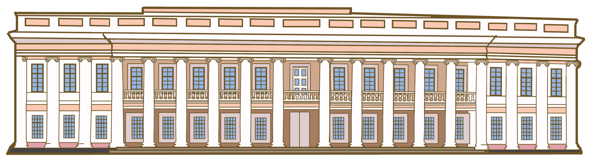

Загальні відомості
Палац Потоцьких – пам'ятка архітектури у Тульчині в стилі класицизму 2-ї половини 18 століття. Почався будуватись у 1781 році за проектом французького архітектора Лакруа на замовлення представників родини Потоцьких. Завершено будівництво у 1985 році.
Історія
Ще тоді палац називали Тульчинським Версалем, адже тут постійно влаштовували прийоми та бали. Навіть польський король Станіслав-Август, який відвудував прийоми у Тульчині, був зачарований пишністю палацу. У замку були величезні колекції живопису, порцеляни, нумізматики, зберігались книги світових класиків. Подейкують, що багатство Потоцького завдяки видобутку золота, над яким ченці-алхіміки працювали у підземеллях.
Зараз палац Потоцьких - це територія Тульчинського училища культури
Зовнішній вигляд
Старий палац – головне приміщення ансамблю, на 2 поверхи. Фасад палацу на парадний двір має відкриту лоджію в 10 колон іонійського ордеру. Великий за розмірами ансамбль за поземним планом нагадував літеру П, відкриту на місто.
На території парку цвіли оранжереї: мандарини, лимони й апельсини. Тут також стояли клітки з чарівними птахами.
Поруч з пишним замком був закладений парк на честь красуні-гречанки Софії, з якою Станіслав мешкав у будинку.
У цьому парку росли італійські тополі й сосни, різні екзотичні рослини. Неповторного вигляду йому надавали численні каскади, скульптури, фонтани, мармурові сходинки й купальні. Це було улюблене місце прогулянок молодих леді, тут влаштовували свята, проводили різні розваги.
Як дістатися
Адреса палацу: м. Тульчин, вул. Незалежності 19.
На рисунку показано, як доїхати до палацу. Тривалість поїздки становить 83.8 км, що займає майже півтори години.
Дібратися можна як автомобілем, так і рейсовим автобусом Вінниця-Тульчин або Вінниця-Бершадь.